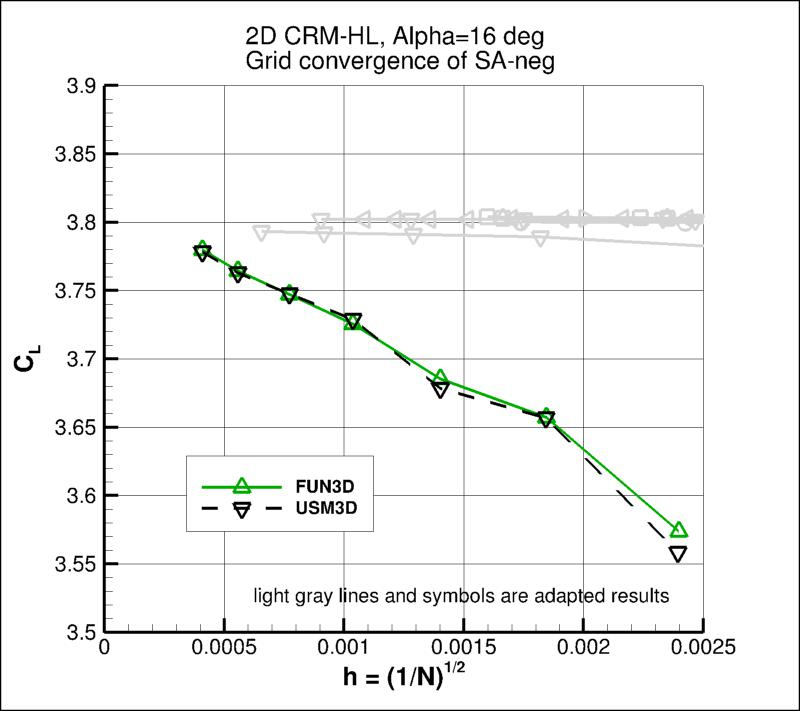
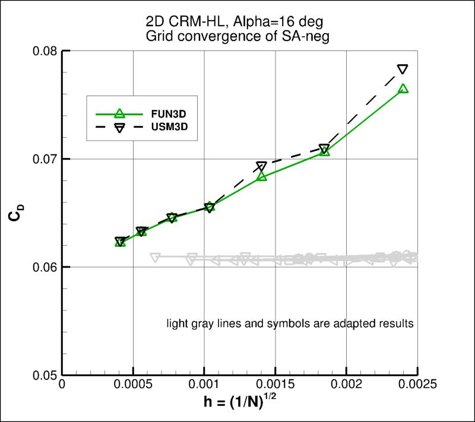
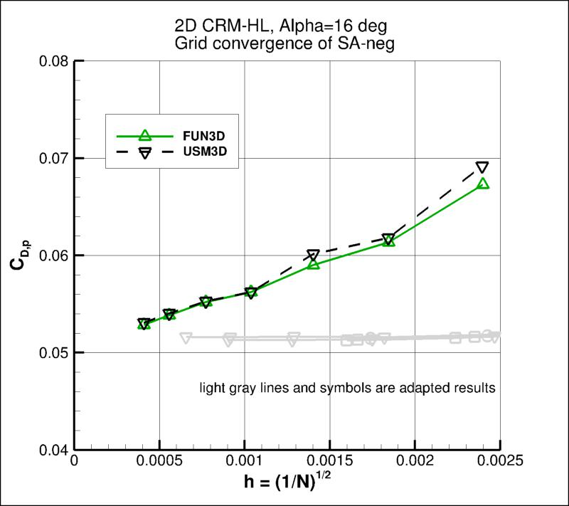
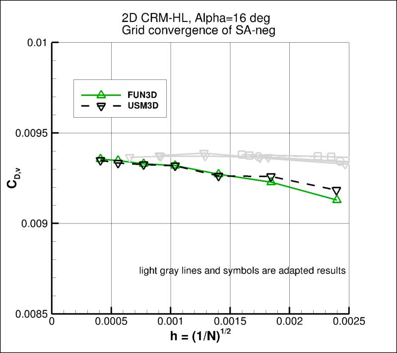
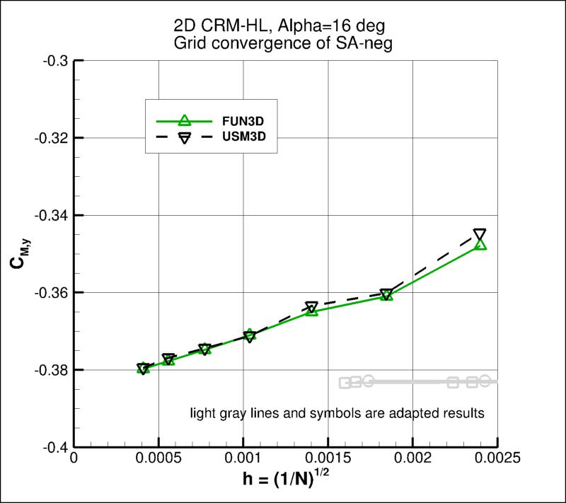

Detailed results from only
one "standard" RANS code (FUN3D) are given here, but reference solutions for
SA-neg exist from the adaptive and high-order
papers AIAA-2020-3219,
https://doi.org/10.2514/6.2020-3219 and AIAA-2020-3220,
https://doi.org/10.2514/6.2020-3220.
(Note that later verifications were made in AIAA-2021-1080,
https://doi.org/10.2514/6.2021-1080.)
So these other solutions provide relevant comparisons,
demonstrating that all solutions from the 7 different codes
are approaching the same result as discretization error goes to zero.
Also, subequently results from a separate RANS code (USM3D) were added (Family 1 only). See near the bottom of the page.
Results here are from compressible codes,
so that the user may compare their own compressible code results. Multiple grids were
used so the user can see trends with grid refinement. Different codes will behave
differently with grid refinement depending on many factors (including code order of accuracy
and other numerics),
but it would be expected that as the grid is refined the results
will tend toward an "infinite grid" solution that is the same.
Be careful when comparing details: any differences in boundary conditions or flow conditions
may affect results.
The RANS code FUN3D was used to compute this
2-D multielement airfoil case with the Spalart-Allmaras turbulence model
(version SA-neg - see full description on
Spalart-Allmaras page).
Note that SA-neg results are expected to be essentially identical to SA.
The full series of 7 grids were used. FUN3D
is a node-centered unstructured-grid code, and
used Roe's Flux Difference
Splitting and a UMUSCL upwind approach with kappa=0.5 employed.
First-order upwinding for the advective terms of the turbulence model was employed by default,
but a second set of runs on grid Family 1 was also done with second-order advection for the turbulence.
Details about the code can be found on its website,
the link for which are given on this site's
home page.
FUN3D was run to near machine-zero iterative convergence.
It should be kept in mind that many of the files given below
contain computed values directly from the code,
using a precision greater than the convergence tolerance (i.e., the values
in the files are not necessarily as precise as the number of digits given).
Note that this case should be run "fully turbulent." However, the results
end up being transitional at this Reynolds number,
particularly on each element's lower surface. For verification
purposes, this should still turn out to be consistent between codes, provided that the same
recommended farfield boundary condition of
 is used.
is used.
For the FUN3D test reported below, the turbulent inflow boundary condition used for SA-neg was:
.
For the interested reader, typical input files for this problem are given here:
FUN3D:
The following plots show the airfoil lift coefficient, drag coefficient, pressure drag coefficient,
viscous drag coefficient, and pitching moment (about x/c=0.25).
In the plot the x-axis is plotting 1/N1/2, which is proportional to
grid spacing (h).
At the left of the plot, h=0 represents an infinitely fine grid.
The FUN3D results on the uniformly-refined grids go toward approximately the same results from the
adaptive and high-order solutions from AIAA-2020-3219,
https://doi.org/10.2514/6.2020-3219 and AIAA-2020-3220,
https://doi.org/10.2514/6.2020-3220.
Note that grid Family 2 approaches the grid-converged results with a lower slope than grid Family 1.
In other words, for a given number of unknowns, grids from Family 2 yield less discretization error
than grids from Family 1. The effect of 2nd order turbulent advection (as opposed to 1st order) on
the Family 1 results is relatively minor.
Using the uncertainty estimation procedure from the Fluids Engineering Division of the ASME (Celik, I. B.,
Ghia, U., Roache, P. J., Freitas, C. J., Coleman, H., Raad, P. E.,
"Procedure for Estimation and Reporting of Uncertainty Due
to Discretization in CFD Applications," Journal of Fluids Engineering, Vol. 130, July 2008, 078001, https://doi.org/10.1115/1.2960953), described in Summary of Uncertainty Procedure,
FUN3D on the finest 3 grids yield the following:
Family 1:
| Code |
Computed apparent order, p |
Approx rel fine-grid error, ea21 |
Extrap rel fine-grid error, eext21 |
Fine-grid convergence index, GCIfine21 |
| CL |
0.22 |
0.406% |
5.402% |
1.083% |
| CD |
0.73 |
1.585% |
6.650% |
4.630% |
| CD,p |
0.75 |
1.881% |
7.788% |
5.513% |
| CD,v |
2.20 |
0.091% |
0.094% |
0.118% |
| CM,y |
0.91 |
0.542% |
1.640% |
1.635% |
Family 1, 2nd order turbulence:
| Code |
Computed apparent order, p |
Approx rel fine-grid error, ea21 |
Extrap rel fine-grid error, eext21 |
Fine-grid convergence index, GCIfine21 |
| CL |
0.85 |
0.334% |
1.097% |
0.997% |
| CD |
0.11 |
1.691% |
100.056% |
4.431% |
| CD,p |
0.14 |
1.994% |
85.232% |
5.249% |
| CD,v |
7.40 |
0.011% |
0.001% |
0.176% |
| CM,y |
0.99 |
0.489% |
1.355% |
1.717% |
Family 2:
| Code |
Computed apparent order, p |
Approx rel fine-grid error, ea21 |
Extrap rel fine-grid error, eext21 |
Fine-grid convergence index, GCIfine21 |
| CL |
negative |
0.148% |
N/A |
N/A |
| CD |
negative |
0.313% |
N/A |
N/A |
| CD,p |
negative |
0.386% |
N/A |
N/A |
| CD,v |
negative |
0.092% |
N/A |
N/A |
| CM,y |
negative |
0.245% |
N/A |
N/A |
The third table above indicates that all results from the finest three grids of Family 2 yield a
diverging apparent order. The most likely reason for this behavior is that the grid sequence is not
very close to a proper "family" per se (see
Notes on Running the Cases with CFD - Note 10).
Recall that creating a proper family of unstructured grids is very difficult
to achieve. Throughout most other pages of the TMR website, we use only structured grids and create proper
families by successively removing every other grid point in each successively coarser grid level.
However, this was not easy to do for the current multielement configuration.
In spite of the diverging apparent order, Family 2 still shows generally consistent results compared to Family 1
and the adapted results.
The data file that generated the above plots is given here:
force_convergence_saneg.dat.
The surface pressure coefficient and absolute value of skin friction coefficient
from FUN3D on the finest (L7) grids
are shown compared to adapted results from GGNS (lift-adapted).
The results agree well with each other.
The data file that generated the above plots is given here:
cpcf_multielementairfoil_saneg_final.dat.
The x-component of skin friction is also plotted below (for FUN3D only, on the L7 grids). Here, the absolute value is not taken.
The data file that generated the above plot is given here:
cfx_multielementairfoil_saneg_final.dat.
Some profiles over the airfoil upper surface along three specific x-locations are shown below
(for FUN3D only, on the L7 grids). The results within the boundary layers of each element are consistent between Family 1, Family 2,
and 1st and 2nd order turbulent advection.
However, over the main and flap elements, inside the wakes of the upstream elements, differences are apparent, especially in
the eddy viscosity. Clearly, the grid density and turbulent advective scheme still have an influence in that region of
the flow, even on the finest L7 grid levels. As a result, it is not entirely clear from these plots what the "grid-converged" answer is in the
wake regions of the flowfield.
The data file that generated the above plots is given here:
profiles_3element.dat.
Some indication of the trends in the wake eddy viscosity can be obtained by plotting profiles from the finest 3 grid levels.
See plot below.
Along x/c=0.4, between 0.072 < z < 0.088, the results using 1st order turbulent advection appear to be trending toward the right,
heading toward the 2nd order turbulent advection results (which appear to be relatively insensitive to the grid density).
The grid Family 2 results are more grid-sensitive (and less accurate) than the grid Family 1 results in this region.
Furthermore, the higher-order results show a "tighter" upper extent of the eddy viscosity, whereas the low-order results tend to smear the edge region.
All of these trends suggest that the results from Family 1 using 2nd order turbulent advection are probably closest to the
"truth" (the grid-converged answer) in the wake regions.
The data file that generated the above plots is given here:
mut_x0p4_gridconvergence.dat.
The eddy viscosity contours (nondimensionalized by freestream laminar viscosity)
and Mach contours (along with streamlines computed on the fly in Tecplot)
from FUN3D on the finest grid (L7) of Family 1 (with 1st order turbulent advection) are shown
in the following plots.
(Note legends do not necessarily reflect min and max values.)
The data file that generated the above plots are given here:
machmut_contours_fun3d_saneg.dat.gz (173.5 MB) (unstructured, at grid points). Note
that this is a gzipped
Tecplot
formatted file, so you must either have Tecplot or know how to read their format in order to use these
files.
The SA-neg model relies on the minimum distance to the nearest wall. For this case,
contours of this function
are shown in the following plot, for the finest grid.

The data file that generated the above plot is given in
multi2d_mindist.dat.gz (gzipped file,
127.8 MB, unstructured, at grid points). Note
that this is a gzipped Tecplot
formatted file, so you must either have Tecplot or know how to read their format in
order to use it.
It is important to note that computing minimum distance by searching along grid lines is
incorrect, and is not the same as computing actual minimum distance to the nearest wall for this grid. Using
the former method will yield differences in the results. The following sketches
demonstrate the concept of minimum distance. Improperly-calculated minimum distance
functions will particularly produce incorrect results for cases in which the
grid lines are not perfectly normal to the body surface.
Note that when the nearest wall point is a sharp convex corner or edge (like an airfoil or wing trailing edge) then the
correct minimum distance is the distance to that corner or edge, which is not a wall normal.


Results from USM3D are shown alongside the FUN3D results below (on the Family 1 set of grids with 1st order turbulent advection only).
Both codes are converging to the same results.





The following profiles along three specific x-locations are taken from the L7 grid.
The two codes yield essentially identical results.